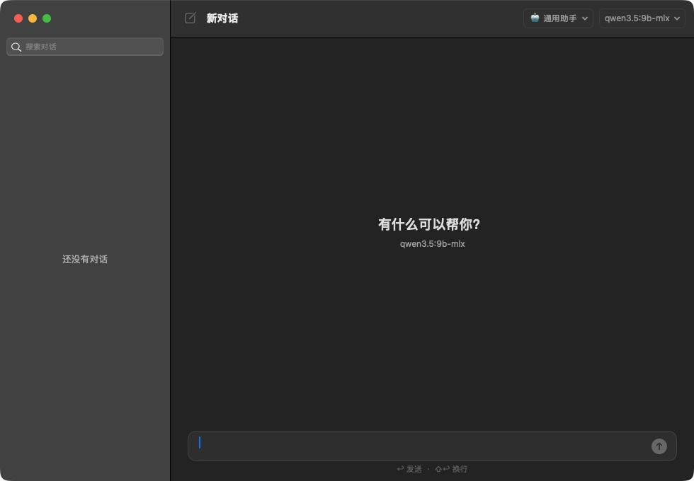
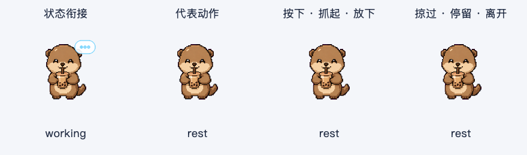

Press ⌘⌃L and say what you want, or select text first. Local Ollama models, nothing uploaded.
About
A SwiftUI / AppKit shell around a headless Python core. A hotkey opens the Quick Panel, which runs requests with local desktop tools. Selected text can be translated, explained, summarized or rewritten, and a screenshot region opens a new chat with the image attached. Anything that changes data asks for confirmation first.
Features
- Quick Panel: ⌘⌃L runs a request with local desktop tools
- Pick an action for selected text, or type your own instruction
- ⌘⌃S captures a region into a new chat
- Workspace: chat history and search, streaming Markdown, regenerate
- Changes show the exact action and run only after you confirm
Screenshots


